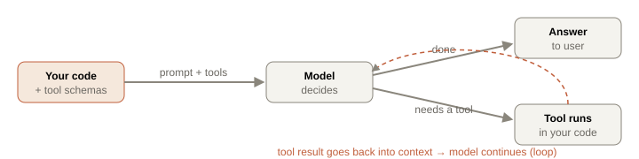

Chapter 5. LLM engineering: sampling, prompting, tools
You now understand what happens inside the model. This chapter is about wrapping it in production-grade software: controlling generation (sampling), steering behavior (prompting), getting machine-parseable output (structured generation), giving the model hands (tool calling), and doing all of it reliably and cheaply. This is the day-to-day craft of an LLM engineer — and the RepoSage "LLM gateway" is built directly from it.
5.1 Sampling: turning a distribution into text
Recall from Chapter 1: the model outputs a probability distribution over the vocabulary. Decoding is how we pick a token from it, repeatedly.
| Strategy | How it picks | Use when |
|---|---|---|
| Greedy (temp 0) | Always the argmax token | Facts, code, extraction, anything needing determinism & reproducibility |
| Temperature | Divide logits by T before softmax (Ch 1 worked example): T<1 sharpens, T>1 flattens | Dial creativity; 0.7 is a common "natural but coherent" default |
| Top-k | Keep only the k highest-prob tokens, renormalize, sample | Cap the tail so absurd tokens can't be chosen |
| Top-p (nucleus) | Keep the smallest set of tokens whose cumulative prob ≥ p, sample | Adaptive tail-cutting; more principled than fixed k; p≈0.9 typical |
5.2 Prompting as engineering, not incantation
Prompting is unreliable when treated as magic phrases and reliable when treated as specification. The techniques that actually move metrics:
- Role separation: system prompt = durable instructions/persona/constraints; user turns = the task. Keep instructions out of user data (also a security boundary — see prompt injection, Ch 11).
- Few-shot examples: 2–5 worked
input→outputpairs. The strongest, most underused lever — the model pattern-matches your examples far more reliably than it follows prose instructions. Make examples cover edge cases you care about. - Chain-of-thought: "think step by step" (or a structured scratchpad) makes the model generate intermediate reasoning tokens before its answer. It measurably improves multi-step problems because the reasoning tokens become context the final answer attends to. For user-facing output, hide the scratchpad and show only the conclusion.
- Structured delimiting: XML tags or clear headers (
<context>…</context>) so the model can tell instructions from data from examples. Reduces "the model followed something in my pasted document" failures. - Explicit output contracts: state the exact format, and give a negative instruction ("if the answer isn't in the context, say 'not found' — do not guess"). Grounding instructions like this are the backbone of faithful RAG.
5.3 Structured output: making LLMs programmable
A chatbot returns prose; a system component must return data your code can consume. Three mechanisms, increasing reliability:
- Ask for JSON in the prompt — works often, fails silently sometimes (markdown fences, trailing commas, a chatty preamble). Never trust it alone.
- JSON mode — the API guarantees syntactically valid JSON, but not necessarily your schema.
- Constrained decoding / tool schemas / structured outputs — the API enforces a JSON Schema at the token level (it literally masks tokens that would violate the grammar). The gold standard: you get exactly the shape you declared.
Regardless of mechanism, always validate against your schema and retry on failure — network hiccups and model drift happen. This validate-and-retry wrapper is a core piece of the gateway.
5.4 Tool calling: the loop behind every agent
The model cannot execute anything. Tool calling is a protocol: you describe available functions (name, description, JSON-schema parameters); the model, instead of answering, emits a structured request "call getWeather({city:'Delhi'})"; your code runs it and returns the result; the model continues with that result in context. This request→execute→result loop, iterated, is the entire foundation of agents (Chapter 10).

5.5 The LLM gateway — one door for every model call
In a real system, nothing calls the provider SDK directly. Everything goes through a gateway that centralizes the cross-cutting concerns: streaming, schema validation + retry, cost/token logging, timeouts, and a role→model map so you can swap models in one place. Here's the validate-and-retry heart of it:
TypeScript — structured generation with auto-retry (full gateway in the lab)
async function generateStructured<T>(
prompt: string, schema: ZodSchema<T>, opts: { role: Role; maxRetries?: number }
): Promise<T> {
const model = MODEL_FOR_ROLE[opts.role]; // cheap model for router, strong for synthesis
let lastErr: unknown;
for (let attempt = 0; attempt <= (opts.maxRetries ?? 2); attempt++) {
const res = await callModel(model, prompt, { responseFormat: "json" });
logCost(model, res.usage); // every call is metered — cost is a first-class metric
try {
return schema.parse(JSON.parse(res.text)); // throws if shape is wrong
} catch (e) {
lastErr = e;
prompt += `\n\nYour previous reply failed validation: ${e}. Return ONLY valid JSON matching the schema.`;
} // feed the error back — the model usually self-corrects
}
throw new Error(`Structured generation failed: ${lastErr}`);
}labs/05-gateway/ — build the gateway: streaming, this retry wrapper, a cost logger, a temperature/top-p playground, and one end-to-end tool call. It becomes the spine of every later lab. npm run lab05.Interview ammunition
Difference between temperature, top-k, and top-p?
Temperature reshapes the whole distribution before sampling (divides logits — sharpen/flatten). Top-k truncates to the k most likely tokens then samples. Top-p (nucleus) truncates to the smallest set covering probability mass p — adaptive, so it keeps few tokens when the model is confident and more when it's uncertain. They compose: a common setting is temp 0.7 + top-p 0.9. For extraction/code, temp 0.
How do you get reliable JSON out of an LLM?
Prefer schema-constrained/structured-output APIs that enforce a JSON Schema during decoding — that's token-level guaranteed. Failing that, JSON mode for valid syntax. In all cases, validate against your schema in code and retry on failure, feeding the validation error back into the prompt so the model self-corrects. Never parse-and-pray on raw prose.
Walk me through how tool calling works under the hood.
You pass tool definitions (name, description, JSON-schema args) alongside the prompt. The model either answers or emits a structured tool-use request. It does NOT execute anything — your code parses the request, runs the function, and returns the result as a new message. The model continues with that result in context. Loop until it answers. Agents are just this loop with a goal and a stopping condition. Security note: the model chooses to call tools, so tool permissions must assume the model can be manipulated.
Why centralize model access behind a gateway?
One place for retries, timeouts, schema validation, cost/token logging, rate-limit handling, and model selection per role — so you can swap providers, add caching, or change the router model without touching call sites. It also makes cost observable (log every call's usage) and makes the system testable (mock one seam). Skipping it means these concerns get copy-pasted and drift.
Few-shot vs. fine-tuning for a consistent output style — which first?
Few-shot first: zero training cost, instant iteration, and often sufficient. Move to fine-tuning only when examples eat too much context/cost at scale, when you need the behavior without spending tokens on demonstrations every call, or when few-shot plateaus below your quality bar. Measure both on a held-out set before committing — fine-tuning is a bigger operational commitment.
Whiteboard summary
Decoding: greedy (T0, deterministic-ish), temperature (logit divisor), top-k (fixed cut), top-p (adaptive mass cut) — they compose.
Prompting = specification: system/user split, few-shot (strongest lever), CoT, XML delimiting, explicit "say 'not found', don't guess".
Structured output: schema-constrained > JSON mode > prose; always validate + retry.
Tool calling: model REQUESTS, your code EXECUTES, result returns to context — this loop = agents.
Gateway centralizes streaming, retry, cost logging, role→model map.
Further reading
- Anthropic — Prompt engineering · Tool use docs
- Vercel AI SDK (TS streaming, tools, structured output) · Chain-of-Thought paper (2022)
- Ollama — run a local model to compare against frontier APIs